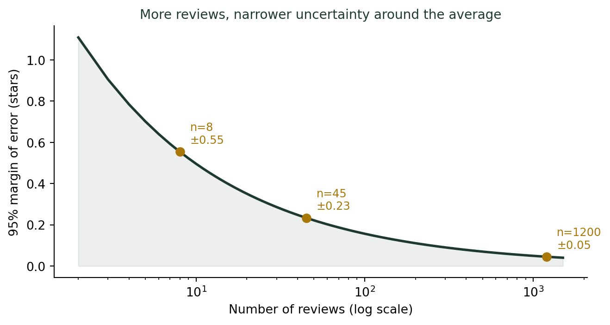
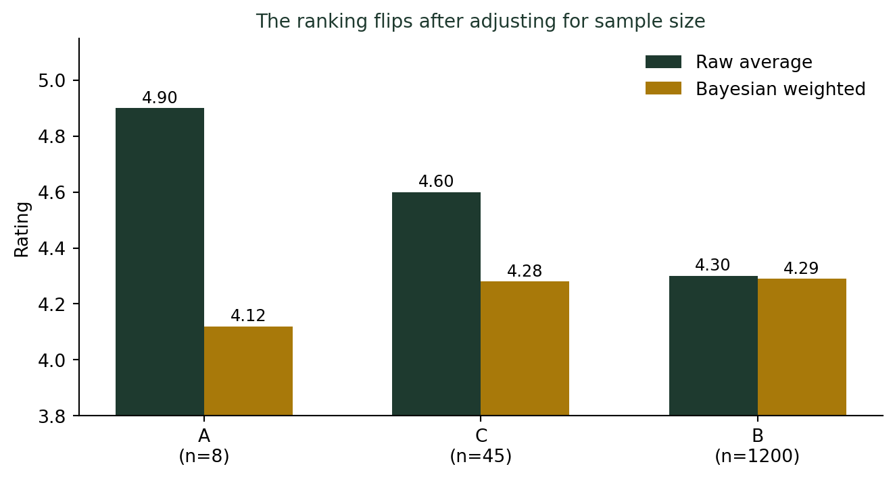

(숫자를 대표하는 방법) 별점 4.5점짜리 식당은 믿을 만한가?
통계기초
기술통계
리뷰 8개짜리 평점 4.9와 리뷰 1,200개짜리 평점 4.3, 어느 쪽이 더 믿을 만할까? 평균과 표본 크기의 관계를 다룹니다.
두 식당 중 어디를 골라야 할까
강의 중 예시로 이 얘기를 꺼내면 학생들 절반은 이미 스마트폰으로 배달앱이나 네이버 지도를 켜고 있다. 다들 이 화면이 익숙하다는 뜻이다. 지도 앱을 켰다. A 식당은 별점 4.9(리뷰 8개), B 식당은 별점 4.3(리뷰 1,200개). 숫자만 보면 A가 훨씬 나아 보인다. 그런데 정말 A가 더 맛있는 집일까?
별점도 결국 표본평균이다
식당 별점은 그 식당에 다녀간 손님들 중 리뷰를 남긴 사람들의 점수를 평균 낸 것이다. 즉, 진짜 궁금한 “이 식당의 진짜 품질”이라는 모집단 값을 몇 명의 표본으로 추정한 표본평균에 불과하다.
리뷰 8개와 리뷰 1,200개의 차이
A 식당의 리뷰가 8개뿐이라면, 다음에 별점 3점짜리 리뷰 하나만 더 달려도 평균은 4.9에서 순식간에 4.6대로 떨어진다. 반면 B 식당은 리뷰가 1,200개이므로, 새 리뷰 하나가 평균을 흔드는 폭은 사실상 0에 가깝다.
같은 “리뷰 1개”라도 표본 크기에 따라 평균에 미치는 영향력은 전혀 다르다.
표본이 작을수록 평균은 크게 흔들린다
통계학에서 표본평균의 불확실성, 즉 표준오차(Standard Error)는 다음과 같이 표본 크기의 제곱근에 반비례해서 줄어든다.
\[\text{SE} = \frac{\sigma}{\sqrt{n}}\]
리뷰 개수 \(n\)이 4배로 늘어나야 표준오차는 절반으로 줄어든다. 리뷰가 몇 개 안 되는 식당은 진짜 실력과 동떨어진 평균이 우연히 찍혀 있을 가능성이 훨씬 크다.
리뷰가 8개인 A 식당은 오차범위가 무려 ±0.55점에 달한다. 진짜 평균이 4.35~5.0 사이 어디든 있을 수 있다는 뜻이다. 반면 리뷰가 1,200개인 B 식당은 오차범위가 ±0.05점 이내로 좁혀진다. “4.9”라는 숫자와 “4.3”이라는 숫자는 애초에 신뢰도가 다른 숫자다.
플랫폼들의 해법: 베이지안 가중평균
이 문제를 잘 아는 플랫폼들은 단순 평균 대신 베이지안 가중평균(Bayesian weighted average)을 쓴다. IMDb 영화 순위가 대표적이다.
IMDb 공식
\[WR = \frac{v}{v + m} \times R + \frac{m}{v + m} \times C\]
- \(R\): 해당 항목의 평균 평점
- \(v\): 해당 항목의 리뷰(투표) 수
- \(m\): “충분히 신뢰할 만하다”고 보는 최소 리뷰 수 (기준값)
- \(C\): 전체 항목의 평균 평점 (사전 기대값)
리뷰 수 \(v\)가 작으면 가중치가 전체 평균 \(C\) 쪽으로 쏠리고, \(v\)가 크면 원래 평균 \(R\)을 거의 그대로 인정한다. 적은 표본은 겸손하게, 많은 표본은 있는 그대로 평가하는 방식이다.
세 식당에 이 공식을 적용해 보자. 최소 기준 \(m=50\), 전체 평균 \(C=4.0\)으로 가정한다.
| 식당 | 원 평점 | 리뷰 수 | 가중평균 적용 후 |
|---|---|---|---|
| A (리뷰 소수) | 4.9 | 8 | 4.12 |
| C (리뷰 보통) | 4.6 | 45 | 4.28 |
| B (리뷰 다수) | 4.3 | 1,200 | 4.29 |

원래 평점만 보면 A > C > B 순이었지만, 표본 크기를 반영하자 B > C > A로 순위가 완전히 뒤집힌다. 리뷰 8개짜리 만점에 가까운 평점은, 리뷰 1,200개가 쌓인 4.3점보다 통계적으로 훨씬 근거가 약하다.
더 깊이: 가중평균의 정식 정의
IMDb 공식이 하는 일은 결국 평범한 평균과 사전 기대값을 리뷰 수 비율로 섞는 가중평균이다. 강의노트 〈기초통계 2. 데이터와 통계 — 측정형 데이터〉에는 가중평균의 일반식과 성적 계산·소비자물가지수 같은 다른 활용 사례도 함께 정리되어 있다.
결론: 별점 앞에는 항상 괄호 속 숫자를 봐야 한다
별점을 볼 때 체크할 것
- 평점만 보지 말고 리뷰 개수를 함께 본다. 리뷰 10개 미만의 만점은 통계적으로 거의 의미가 없다.
- 리뷰가 적은 만점보다 리뷰가 많은 근소한 고득점이 더 안전한 선택이다.
- 플랫폼이 “가중 평점”이나 “정렬 기준”을 제공한다면, 단순 평균보다 그것을 신뢰하자.
- 표본이 작을 때는 극단적인 값이 나오기 쉽다는 것을 항상 염두에 둔다. 이것은 식당 평점만이 아니라 표본을 다루는 모든 통계에 적용되는 원칙이다.
숫자 하나(4.9)가 다른 숫자(4.3)보다 커 보인다고 무조건 더 나은 것은 아니다. 그 숫자가 몇 명의 목소리에서 나왔는지를 함께 봐야, 비로소 평균을 제대로 읽을 수 있다.
나는 요즘도 배달앱에서 리뷰 5개짜리 만점 신규 매장보다, 리뷰 800개에 4.6점인 오래된 맛집을 먼저 누른다. 표본 크기를 아는 것만으로도, 선택이 조금은 덜 후회스러워진다.